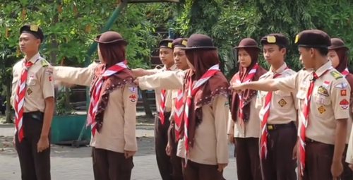
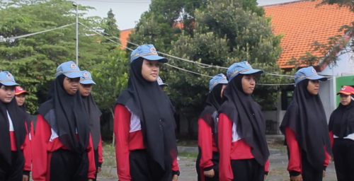
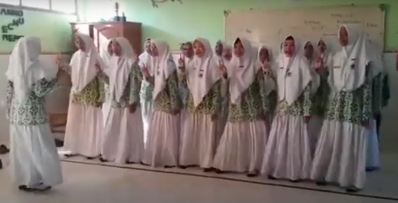
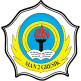

PROGRAM UNGGULAN :
Prodistik
Fun English Club
KEGIATAN EKSTRAKURIKULER :
Futsal
PMR
Paduan Suara
Banjari
Karya Ilmiah Remaja
Robotika
Jurnalistik
Volly
Pramuka
Tata Boga
Paskibra
Bulu Tangkis
Tenis Meja
Qiro’ah
Tari
Videografi
Atletik
Pencak Silat



EKSTRAKURIKULER
VISI
Visi Madrasah Aliyah Negeri 2 Gresik: "Madrasah Islami,
Terampil, Populis, Berbasis Digital dan Mendunia“
VISI DAN MISI
HOME
BERITA TERKINI
VISI MISI
EKSTRAKURIKULER
PPDB MAN 2 GRESIK

Madrasah Aliyah
Negeri 2 Gresik